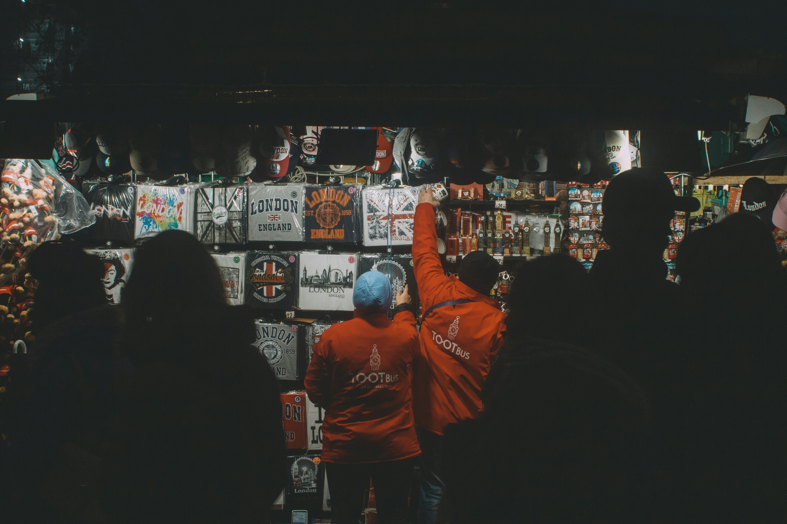
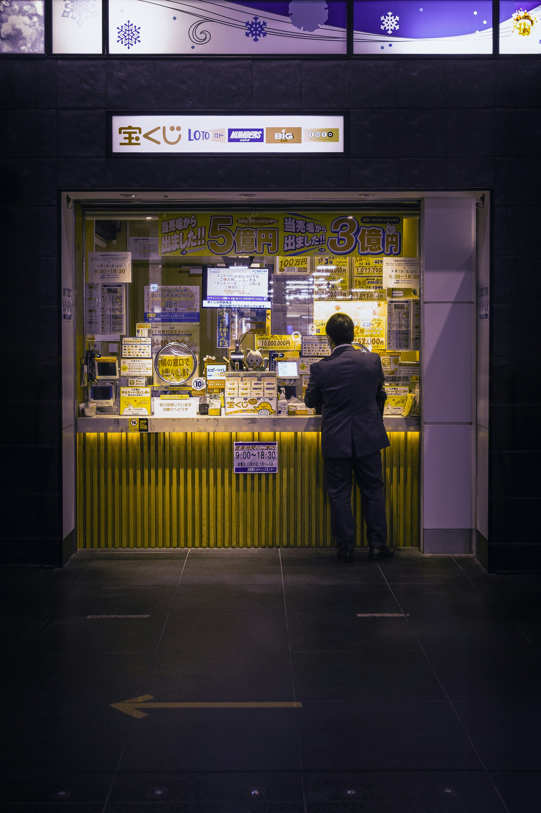
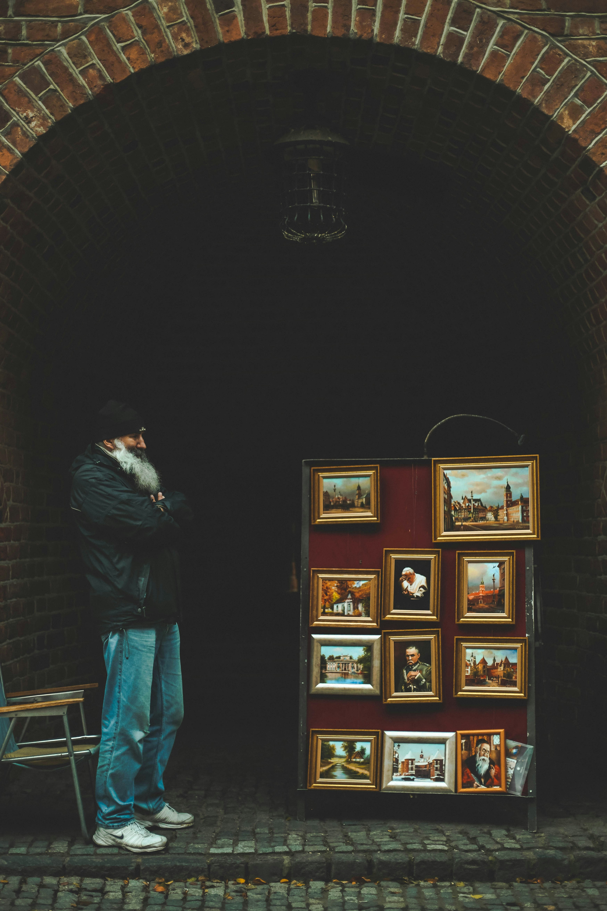
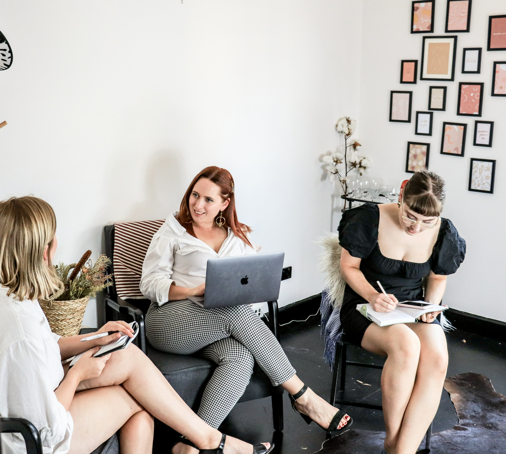
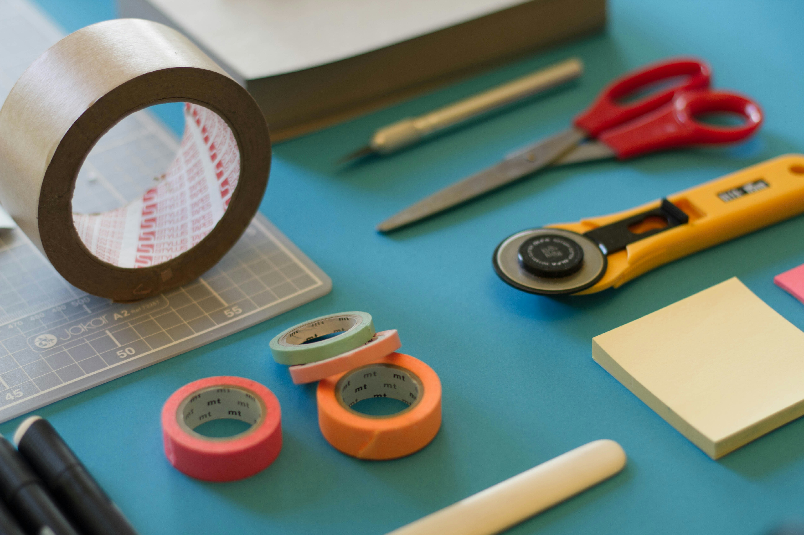

Values and Design Reflection
This section connects our client and user values with specific design choices made across HobbyHub. Each decision reinforces a deeper emotional and cultural resonance, ensuring our site is more than functional — it’s meaningful.
Belonging
Users should feel part of a supportive, shared-interest space
Group creation, user profiles, & welcome banner
Creativity
Encourage showcasing personal projects and expression
“Create a Project” flow and custom project cards
Curiosity
Showcase other users' creations and highlight trending content
Explore page with filters and featured projects
Encouragement
All skill levels are welcomed and valued
Tooltips, supportive copy, and accessible form design
Contribution
Make sharing easy and rewarding
Step-by-step creation form and user recognition features
Identity and Emotional Tone
HobbyHub aims to project an identity rooted in belonging, creativity, encouragement, and curiosity.
Our tone is warm, inclusive, and empowering—designed to uplift hobbyists of all levels, encouraging both expression and connection.
The emotional atmosphere is intentionally cozy and collaborative, ensuring users feel welcome whether they are showcasing a project or seeking inspiration.
Example Homepage Text
"HobbyHub — A creative space where your passions matter. Share your latest project, discover others like you, and connect with a community that celebrates creativity in all forms."
This message uses warm, encouraging language to reinforce emotional safety and belonging, aligning with the values identified through user research.
Imagery
Below are curated imagery sets that align with our emotional tone and platform identity.
User Showcase



These images promote belonging and validation, reinforcing the site as a place where users are seen and celebrated.
Creative Collaboration



Highlights inclusivity and teamwork, reflecting CC Imagery's goal of fostering connections through shared hobbies.
DIY



These visuals empower users with the confidence to start something new and reinforce the site's educational and inspirational goals.
Language and Expression
This section outlines how our use of language aligns with inclusive design principles, supporting the values and accessibility goals of HobbyHub.
Inclusive Language Checklist
- ✅ Use person-first language (e.g., "person with disability").
- ✅ Use gender-neutral terms (e.g., "creator" instead of "maker").
- ✅ Avoid stereotypes or euphemisms.
- ✅ Write in plain language for better accessibility.
- ✅ Acknowledge cultural and linguistic diversity respectfully.
- ✅ Consult appropriate communities where necessary.
Original Homepage Text
HobbyHub — A creative space where your passions matter.
Share your latest project, discover others like you, and connect with a community that celebrates creativity in all forms.
Revised Homepage Text
HobbyHub — A creative space where your passions belong
Share what you're working on, explore diverse creations, and connect with a supportive community that values creativity in all its forms.
Annotation
The revised version promotes inclusivity by using gender-neutral and plain language. It removes assumptions about hobbies and encourages a wide range of users to feel welcome and understood. These updates support the client's inclusive mission and align with WCAG 3.1.1 for language clarity.
Using “belong” instead of “matter” to promote a sense of acceptance and community (linked to the value of belonging).
Replacing “your latest project” with “what you’re working on” to remove pressure and embrace all skill levels (linked to the value of encouragement).
Including “diverse creations” to reflect a culturally inclusive environment and acknowledge varied user backgrounds (supports curiosity and creativity).